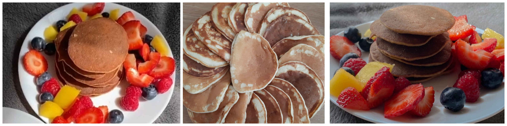

Ingrediente:
-400gr de făină
-500ml de lapte
-1 ou
-o lingură de bicarbonat de sodiu
-o linguriță de esență de vanilie
-3 lingurițe de praf de copt
-3 linguri de unt
-sare
1. Amestecă făina cu zahărul, zahărul vanilat, praful de copt și bicarbonatul de sodiu.
2. Separă albușurile de gălbenușuri. Adaugă un vârf de sare peste albușuri și mixează bine până devin spumă.
3. Amestecă laptele cu untul topit, toarnă peste gălbenușuri și amestecă bine.
4. Adăuga apoi gălbenușurile peste făină și amestecă bine compoziția cu ajutorul unui mixer.
5. Încorporează apoi și albușurile, folosind telul până când compoziția devine omogenă.
6. Încălzește tigaia la foc mic și topește puțin unt.
7. Adaugă compoziția pentru clătite în tigaie. Atunci cand apar bule la suprafață, e timpul să întorci clătitele.
8. Aranjează-le frumos în farfurie.
Poftă bună, dragii mei! 🤗